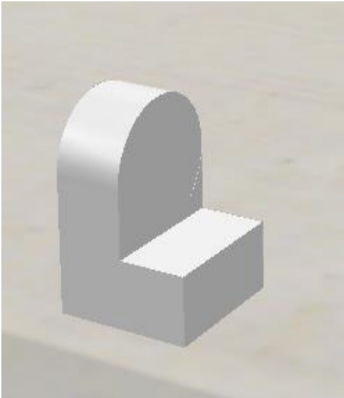
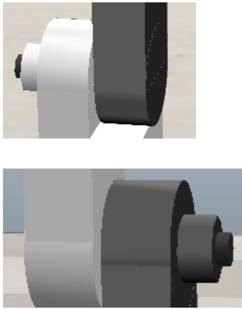
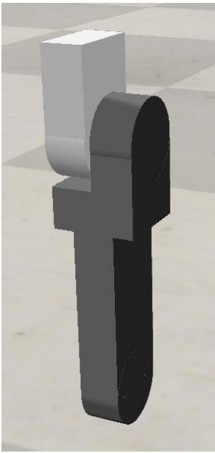
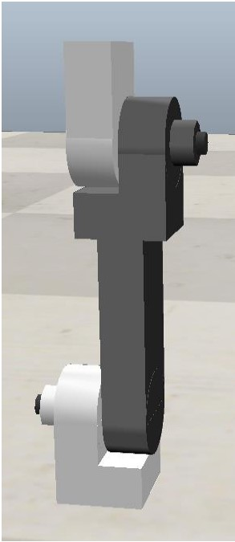

ELABORATE
Designing a Robotic Arm
To build a robot arm you will first need to design the prescribed three basic parts.
(Note- This tutorial will be designing and building an articulated type of robotic arm, but you are
free to take inspiration from the design method and build a cylindrical type.)
-
Base-
The base is most important part of the Robotic Arm
as the weight of all other parts including the payload will
have major effect on the base.

-
Joints-
There are two basic joints that can be used to build a robotic arm;
Revolute joint(Rotational movement) and Prismatic joint(Linear movement).
For an articulated arm, a revolute joint is used between the links as shown in
figure

-
Links-
Links are the shoulders and arms of the robotic arm. These are joined to each other
using joints, which then can be actuated to move the entire arm

Combining all three parts completes the design of our robotic arm. Next we
will build this in the Coppeliasim software using a step by step procedure.
